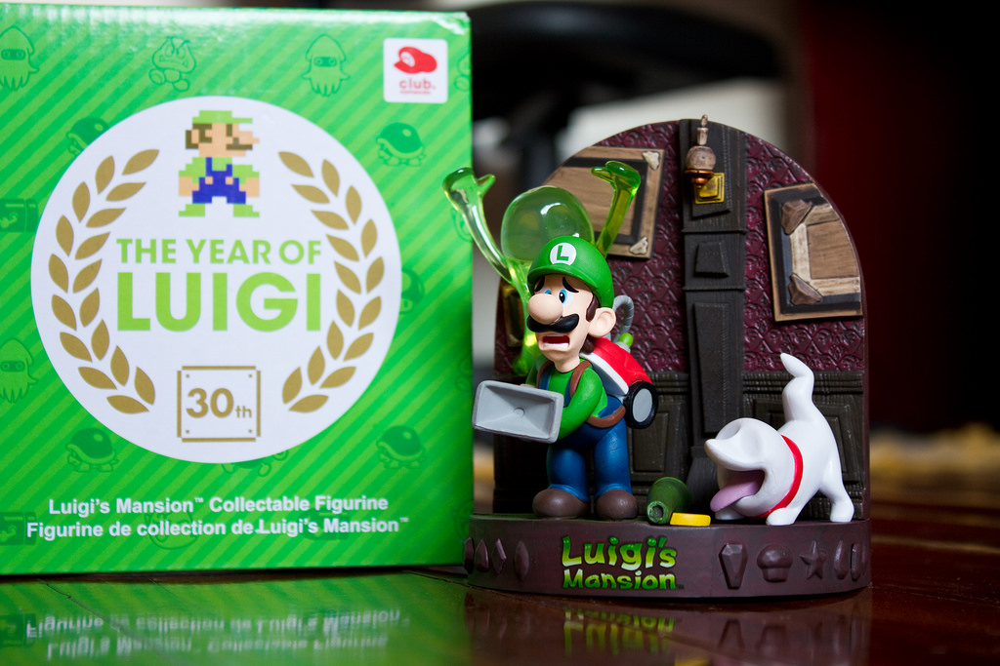

In Japan in 2015, Luigi and other Nintendo characters' outfits were given redesigns to promote the New Nintendo 3DS. Luigi also has 3 titles in his series, Luigi's Mansion, with the final one coming out in 2019. In the 1987 game, Wrecking Crew, Luigi's outfit was pink overalls and in the Japan-exclusive Mario Bros. movie, his cap and pants were blue and his shirt was yellow. In early games, Luigi was just a recolor of Mario. In Mario Power Tennis, after winnning as Luigi, Mario will go up to congratulate Luigi, before Luigi looks down to see that Mario stepped on his shoe. This scene ended up with people disliking Mario's character entirely. In 2013, Nintendo's CEO, Satoru Iwata, declared that the year would be known as The Year Of Luigi, with games focusing on Luigi or with Luigi cameos throughout. In Super Smash Bros. 64 and Super Smash Bros. Melee, Luigi's voice was Mario's voice with a higher pitch. In the Smash Bros. series, Luigi had to be unlocked in each game, with the exception of Super Smash Bros. 4.
In the Year of Luigi, the Nintendo service, Club Nintendo, released a Luigi's Mansion Dark Moon figure for 1,500 coins. These figures in turn, sold out rather quickly. Dr. Luigi was one of the games released during the year of Luigi. It was essentially the game, Dr. Mario, with a Luigi overlay and it featured the Luigi version of Dr. Mario and L-shaped pills. It also had a mode where the Wii U gamepad's touch screen needed to be used, and the game also offered a mode like the original Dr. Mario.
The first Super Mario game starring Luigi as the main character was Mario is Missing which came out in 1993 and was widely disliked among Nintendo fans. Luigi's next game, Luigi's Mansion revived the series of Luigi games as it soon became a Mario series classic. When the Year of Luigi came around in 2013, Luigi got multiple games centered around him. Luigi's Mansion Dark Moon was one of these; in my opinion, it wasn't as much of a classic as the first game, but it's still a great sequel. A popular Super Mario Odyssey mod named "Super Luigi Odyssey" is a version of the original game, except Mario's sprites and voice clips have been replaced with that of Luigi. Until February, 2018, Luigi was absent from Odyssey, and shortly after the game's release, Nintendo Direct announced a new mode called Luig's Balloon World. This game wasn't centered around Luigi, but it's a very unfamiliar Mario game; the name of the game is Mario Excitebike and it was like Super Mario Kart and the game, Excitebike, combined. In 2005, Mario Party Advance was released and was the worst selling Mario Party game ever. The game only had four characters, Mario, Luigi, Princess Peach, and Yoshi, and there could only be one player on the board. The game was also a race to avoid running out of rolls.
Aside from games with the green-clad plumber, Luigi also has a considerable amount of merchandise. Some notable plushies of him include the Mario Party 5 plush set, a phush in which Luigi has his Poltergust 5000 on his back, another Luigi's Mansion plush featuring Luigi with his hands to his face and a scared expression, and the Kellytoy Luigi plush. Much rarer plushies include the previously mentioned Mario Party 5 plush, which is well-known for its rarity. Another rare plush set with Luigi is a set of Super Mario World plushies. A set of rare Mario plushies that I was lucky enough to receive is a Mario, Luigi, Yoshi, Toad, and Koopa Troopa New Super Mario Bros. Wii set. This next plush isn't Luigi, but rather, his rival, Waluigi. There is a rare set of Baby Mario, Baby Luigi, Baby Wario, and Baby Waluigi plushies, which I feel might be bootlegs, as Baby Waluigi doesn't exist in the official Mario universe. A very rare Princess Peach plush was released around 1997 with a Mario wing cap plush, Luigi, and Toad set.